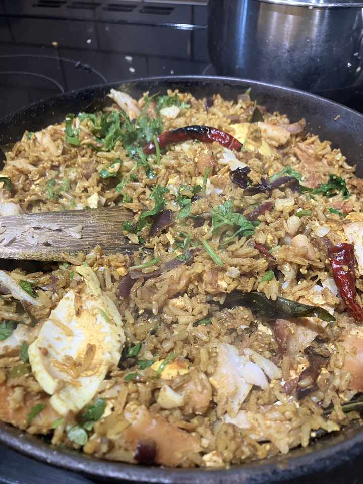

A template for a kedgeree
Makes for 2+ peoples

Cook 1 cup of brown rice
Hard boil 2 eggs
Gently steam 2 undyed smoked haddock from Doig’s
Chop 1 onion, 2 chillies
Fry onion, chillies on medium heat for 5 mins (until starting to brown a little)
Add 1 tsp mustard seeds, around 10 curry leaves, seeds of 1 black cardomon and two dried red chillies from Deli (neha chillies)
When seeds splutter mix in the cooked rice
Add 1/4 tsp turmeric, 3 tsp cumin, 1 tsp coriander, 1 tsp fish masala from deli (neha fish masala)
Salt + pepper.
TASTE! Adjust spices - normally add more cumin + salt… a little more fish masala if needed
Add egg (break up in to 4 pieces per egg). Add haddock (break up a little). Mix in.
Cook on gentle (electric 2) for 5 mins - stirring once or twice
TASTE! and adjust
Add fresh coriander, squeeze of lemon..
TASTE and adjust lemon
Serve with pickles, indian sauerkraut, yogurt, and a sprinkle of salt and vinegar crisps!
(Need to ACTUALLY TRY THAT… ha ha)